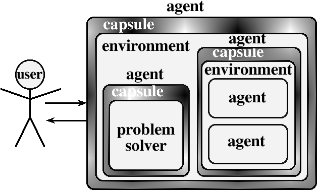

(89) Heterogeneous Distributed Cooperative Problem-Solving System : Helios
Machine: UNIX machine
Environment: UNIX
Language: C
Source Code: 0.9 MB
Documents: User's Manual (English / Japanese)
Overview
Helios is a system to support the construction of heterogeneous
distributed cooperative problem-solving systems by establishing
message passing between various problem solvers such as databases,
constraint solvers, etc.
Features
Helios defines a problem solver as an agent and attaches cooperation
mechanisms to it. These functions enable us to construct a
heterogeneous distributed cooperative problem-solving system for
solving problems with the cooperation of various agents in a
distributed environment. Helios encapsulates a problem solver with a
capsule module which absorbs its heterogeneity.
Communication between agents is carried out by placing them in an
environment. An encapsulated environment also becomes an
agent.
Helios provides the capsule description language CAPL, the environment
description language ENVL, and agent cooperation mechanisms.

Function
Helios works on a distributed environment, and supports the following
functions.
- communication between programs/systems implemented in various
languages.
- constructing a problem-solving system by combining existing
problem solvers in a bottom-up manner.
- constructing VLDB/VLKB by combining existing databases/knowledge
bases.
- constructing a constraint solving system to solve constraints over
multiple domains by combining various constraint solvers.
- constructing multi-agent systems/distributed problem solvers.
FTP
- README.
- Heterogeneous Distributed Cooperative Problem-Solving System :
Helios [3,700K]

www-admin@icot.or.jp